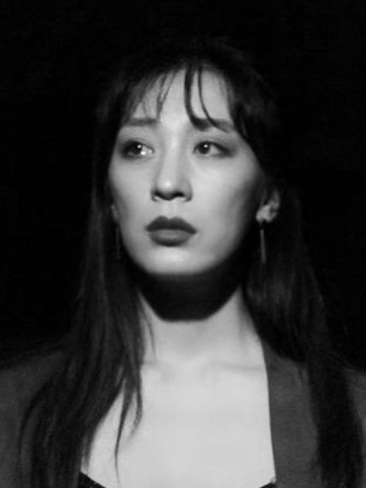
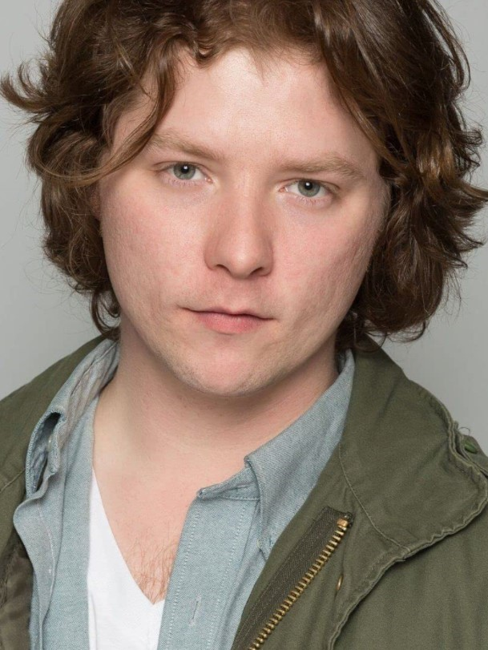

Two camp counselors are running from Jason, and then another threat appears.
Logline
Camp Crystal Lake. Two camp counselors of Crystal Lake are escaping from a camp's killer. As Jason is lurking among them, he is unaware that he is as well lurked on.
Synopsis
Camp Crystal Lake. Two camp counselors of Crystal Lake escaping from the camp's killer, Jason. They run around the dark forest and hide from Jason. Jason is lurking among them. Jason is unaware that he is as well being lurked on.
About Jason Z
Robert Cantu’s Jason Z is a fan-based film of the Friday the 13th franchise. Robert wanted to make a tribute to his favorite slasher killer. Two camp counselors are running for their lives as Jason pursues them in the forest. Its action-driven sequence will make Friday the 13th fans be happy to see Jason again.
Project Specification
GENRE: Horror
RUNNING TIME: 8 minutes 20 seconds
COUNTRY OF PRODUCTION: United States
LANGUAGE: English
COLOR: Color
SHOT ON: Lumix Mirrorless
ASPECT RATIO: 1.85 : 1
RELEASE FORMAT: 4K
FILM LOCATIONS: Malibu, California, USA
COMPLETION DATE: May 2019
PRODUCTION COMPANY: Corpus Fusion/Austin, Tx, t: 210-251-1448, e: corpusfusion@gmail.com
SOCIAL MEDIA WEBSITES: Film Website: corpusfusion.com, Facebook: facebook.com/corpusfusion, Twitter: twitter.com/fusioncorpus, Instagram: instagram.com/corpusfusion
DIRECTOR’S STATEMENT
As my favorite horror franchise, I was glad to complete my fan base short. I want to see Jason scaring a new generation of horror fans. But maintaining the old formula for a good slasher film: jump scares, chase scenes, and shocking kills. My short will get your heart pumping with adrenaline.
Jason Z continue to be menace for camp counselors. But my twist is that Jason would be challenge and hunted for once. Jason became a target for another cruel entity and Jason does not have the upper advantage. Jason would demonstrate how strong he is to defend himself.
Horror fans would be delighted with my creative fusion of horror. I would hope that it would inspire another Friday 13th Film with more blood and gore. I know the fans are waiting for more.
Robert Cantu
Producer, Writer & Director
03/03/2021
Cast
Jiseung Cho as Camper 1

Jiseung aka Lizzy plays Camper 1. Jiseung Cho is an actress, modeling and martial artist. She is teaching and practicing martial arts. She is known for Jason Z, 2019 . Lizzy is currently residing in South Korea.
Julie Krawchuk as Camper 2
Julie plays Camper 2. Julie is an actress, known for Jason Z, 2019 and The Florentine Gardens, 2021.
Devin White as Jason Voorhees

Devin plays Jason Voorhees. Devin was born in Spokane WA and has proven to be quite the creative artist and character actor. then continued his career further by moving to Los Angeles, where he began writing and directing his films. Devin is known for Arizona, 2016 , Jeff, 2019 & 1969, 2021.
Michael Bundy as Zombie 1
Michael plays Zombie 1. Michael Bundy is from Salem, New Jersey, USA. He is known for his work on The Script, 2002 , Love Equation, 2010 and Vegas Knock Out, 2004.
Nick Asaro as Zombie 2
Nick plays Zombie 2. Nick is from San Diego, California. Nick is known from The World We Known, Espionage, 2017 and Woe Ain’t me, 2018 and No Offense, 2020.
Danny Castellanos as Zombie 3
Danny plays Zombie 3. Danny is a Honduran-American Actor from East Los Angeles better known for his work on the family-oriented 'We The Geeks of East L.A.' YouTube channel. Danny is known for We the Geeks of East L.A., Star Wars vs Power Ranger, 2017, Createfinity, 2019 and The Lost Child, 2020.
Devvrath Arora as Zombie 4
Devvrath plays Zombie 4. Devvrath is an actor, known for Jason Z, 2019.
Jason Ha as Zombie 5
Jason plays Zombie 5. Jason is known for his work on MidLife Crisis, 2017, The Blind Assassin, and 5 Minute Action Movies, 2020.
Vincent Morales as Zombie 6
Vincent plays Zombie 6. Vincent is an actor, known for Game Changers 2019 , Juliet, Veil, 2019 and Jason Z, 2019.
Tanner Bush as Zombie 7
Tanner plays Zombie 7. Tanner is an actor, known for Jason Z, 2019.
PRODUCTION TEAM BIOGRAPHIES
ROBERT CANTU: Producer, Writer & Director
Robert Cantu was born in Corpus Christi, TX, and raised in Houston, TX. In 1998, he lived to Los Angeles and he started out as a still photographer on countless student and amateur films. He got more hands-on experience as a boom operator, PA, and working in the grip department. With his knowledge, he produced his first short film “5150”, an inspired film from Stanley Kubrick’s 2001, and it was entered in numerous film festivals. He continued to volunteer on film sets and then in 2001, he produced and directed “The Barista”. In 2003, Robert produced and directed an ego time bomb detective with no moral principles, “Detective Grgich”, a noir film. In 2004, his first real short film “Suspended Homicide” met his professional standard and he directed with greater confidence. He has written my first full-length screenplay “corpus FUSION”. He writes three more full-length screenplays: “Dirty Mary, Crazy Larry”, “Silent Motive” and “JASONLAND”. In 2019, Robert produced and directed a horror short film, “Jason Z”. A Youtube released was on June 13, 2019. By 2020, Robert produced and directed two short Noir films, “The Florentine Gardens” and “Homicidal Crimes”.
JAVIER PRATO: Co-Director, Cinematographer, Editor, Colorist & Sound Mixing/Editing
Javier Prato is an editor and cinematographer from Buenos Aires, Argentina. He is known for Ring of Blood (2008), Empty Arms (2007) and Jesus Christ: The Musical (2005).
FULL CREDITS
CORPUS FUSION ENTERTAINMENT presents
ROBERT CANTU FUSION
"JASON Z"
Camper 1
Jiseung Cho
Camper 2
Julie Krawchuk
Jason Voorhees
Devin White
Zombie 1
Michael Bundy
Zombie 2
Nick Asaro
Zombie 3
Danny Castellanos
Zombie 4
Devvrath Arora
Zombie 5
Jason Ha
Zombie 6
Vincent Morales
Zombie 7
Tanner Bush
Producer/ Director/
Writer/ Film Editor
Robert Cantu
Co-Director, Cinematographer/
Film Editor/Sound & Visual Effect
Javier Prato
Special Effect Makeup Artist
Jewel Feist
Director Assistant/Designer/
Movie Poster Designer